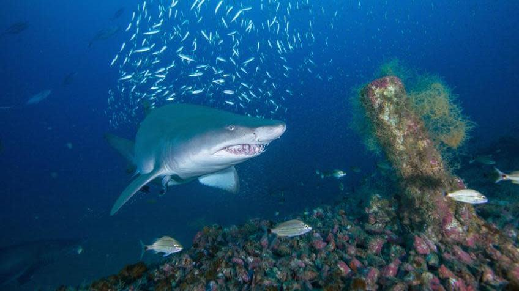

About Sharks

"Sharks are a large group of fish that have inhabited the oceans for over 400 million years, even before dinosaurs populated our planet.
They belong to the superorder Selachimorpha, and modern sharks have specific characteristics like a cartilaginous skeleton, five or six pairs of gills and several rows of teeth."
- sharks-world.com
Types of Sharks
Types of Sharks in Australian waters
- Great White Shark
- Tiger Shark
- Whale Shark
- Port Jackson Shark
Shark Habitat
"Sharks are found from shallow to deep sea environments, in coastal, marine and oceanic environments the world over.
Some species inhabit shallow, coastal regions, while others live in deep waters, on the ocean floor and in the open ocean.
A few species, such as the bull shark, move easily through salt, fresh and brackish waters."
- thoughtco.com/facts-about-sharks
